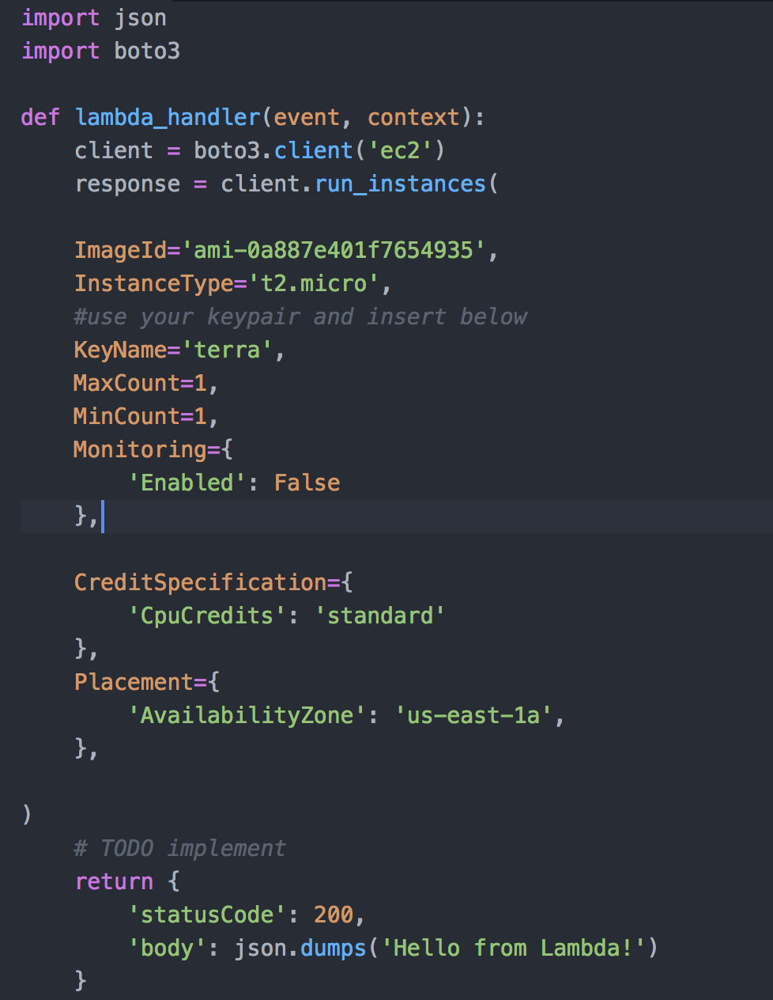
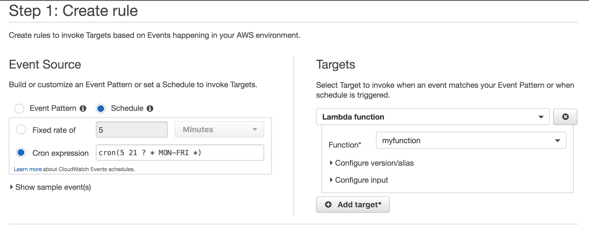
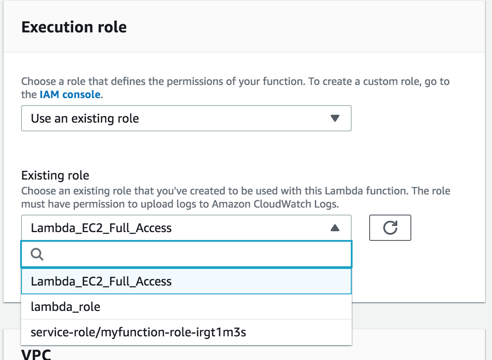
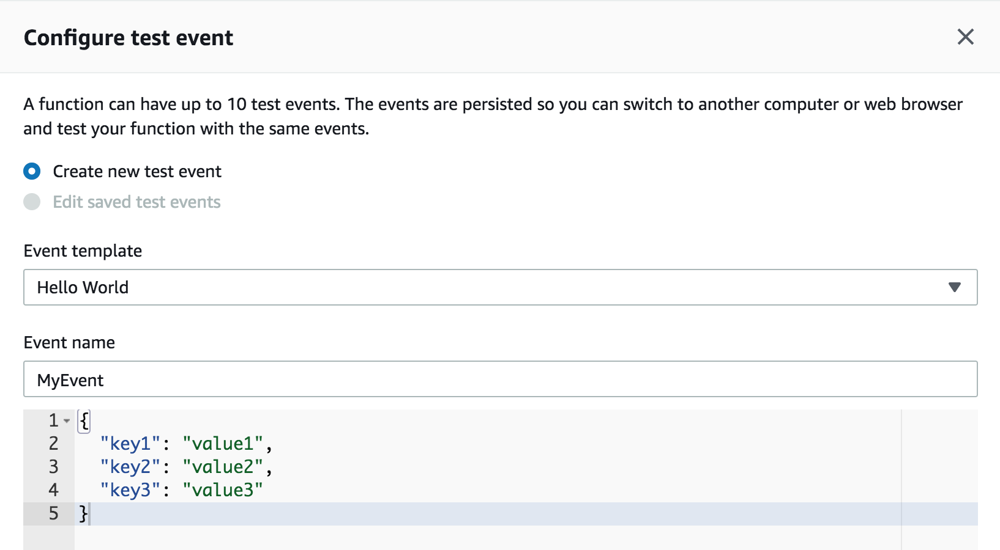
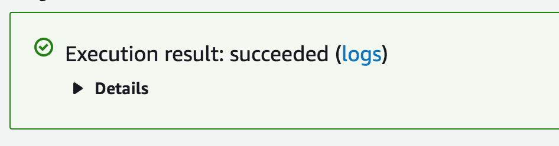

February, 21 2020
Lambda Function to Launch EC2 instance
This week I will talk about automating and scheduling Lambda function to launch an instance at a specific time.
The first thing I did was I when to create an IAM role. Below is how I configured my IAM role:
- I created an IAM role to allow lambda functions to call EC2 on my behalf
- I then attach AmazonEC2FullAccess
- I skipped creating the tag
- I then named my role Lambda_EC2_Full_Access
Then I created my Lambda function
- I wrote my lambda function in python and used boto3
- See picture below for my code, I chose to launch an Amazon Machine Image and picked t2.micro for the instance type. I also specified the availability zone in 'us-east-1a'.

After that, I created an event rule on cloudwatch
- For event source, I picked schedule and I decided to use cron expression (more about cron on my previos blog-blog2).
- For the target, I picked my lambda function that I just created.
- I then named it cron_launch and I checked the enabled check box

And then I went back again to my lambda function and went to the execution role section and attach the IAM role I created earlier to my lambda function.

I then configured a test event so I can use it to test my lambda function to make sure it is working. I just kept all the default test configuration as we can see from the picture below and then I clicked create.
Below is the format:

If your lambda function was successfully launched you will see this:
